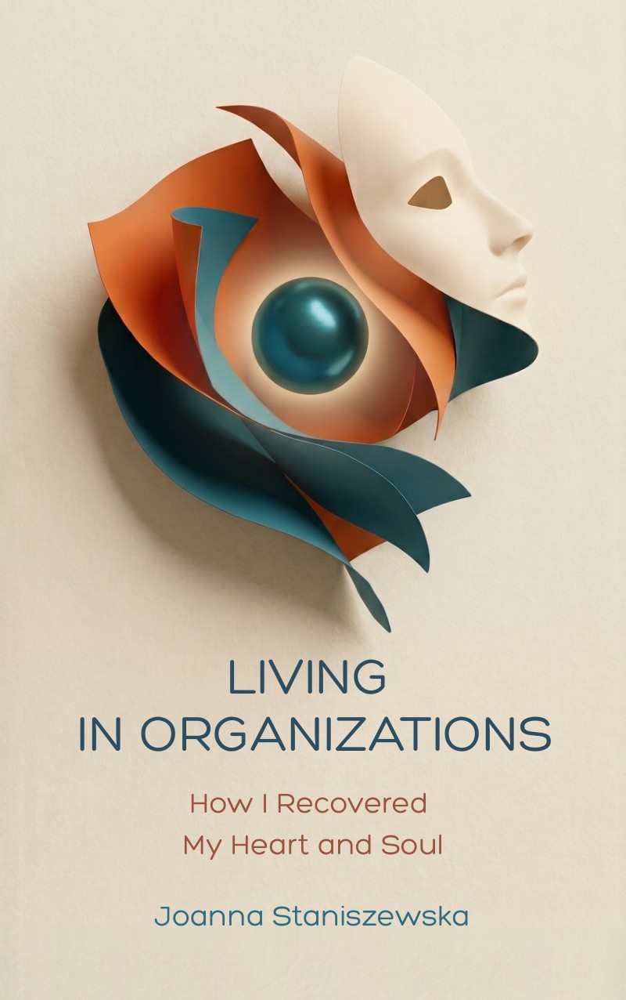

Live 11.11.2026
How I Recovered My Heart and Soul
We have more agency than we think.
And we know less than we assume.

The Perspective
This book began in the middle of a meeting, years ago, when I noticed the gap between what was being said and what was actually happening in the room. That gap, between the surface of organizational life and what moves beneath it, is what I have been trying to understand ever since.
There are three movements in what follows. The first stays close to the visible world: organizations, structures, strategies, the daily texture of professional life. The second goes inward, into the patterns we rarely have time to examine, the language that shapes what we can imagine. The third is harder to describe. It is encounter more than explanation. I find myself most alive there.
What I carry from this work is the quality of attention I was able to bring.
J.S.
“I changed myself, and it changed everything around me. That is the evidence I have. It is enough.”
The Chapters
Part I: The Visible World of Work
Part II: The Inner Architecture
Part III: The Deeper Current
Questions
When is it available?
The book goes live on 11.11.2026, in print and as an ebook. The preview chapter is ready to download now.
Who is this book for?
For anyone who works inside an organization and senses there is more happening than the surface shows: leaders, consultants, coaches, and people simply paying attention.
What format?
Print and digital. Available in English.
Media or podcast inquiry? Write to Joanna
Preview
Read Chapter 1 now. Leave your email below and you will receive one message when the book is live.
Download the preview chapter (PDF, 3 MB)
You can unsubscribe at any time.